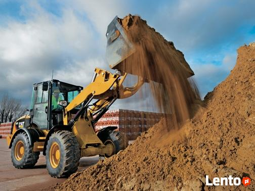
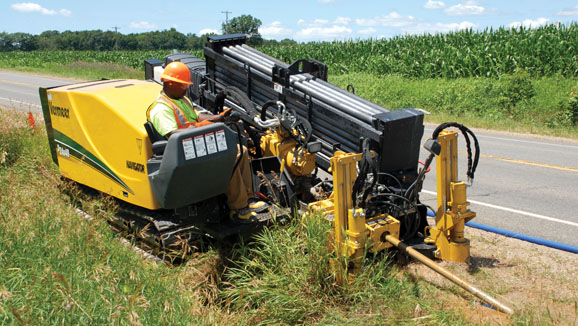
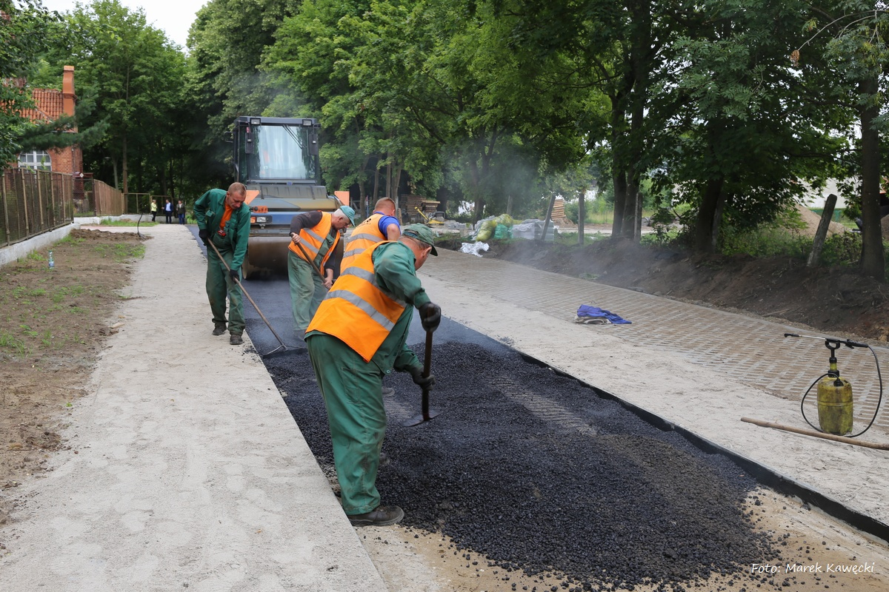

PRZYŁĄCZA
Budowa, odbiór oraz próby techniczne i prace geodezyjne potrzebne do zaoptrzenia mieszkania w wodę

ROBOTY ZIEMNE
Wykopy, wywóz ziemi, dostarczenie piasku, żwiru czy tłucznia

PRZEWIERTY
Sterowane przewierty o długości do 1,5 km niezależnie od nawierzchni i rodzaju terenu

WYMIANA NAWIERZCHNI
Zerwanie uszkodzonej nawierzchni, odświeżenie asfaltu, uzupełnianie braków w nawierchni drogowej
Piotr Palczewski
Założyciel, wieloletni szef
tel : 609 - 432 - 137
Jerzy Matuszczak
Współwłaściciel, nadzór robót
tel : 609 - 432 - 137